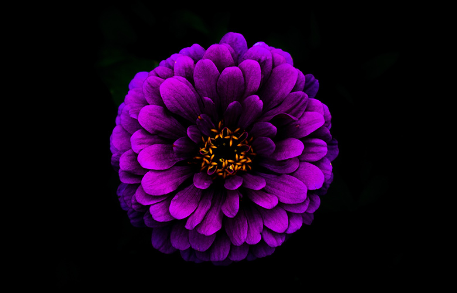

O CORVO

"No silêncio da noite sombria,
Quando meus sonhos são pó e saudade,
Surge o corvo, e sua fria melodia
Me sussurra uma amarga verdade.
"Lenore!" — clamo, em desespero,
Meu coração, pesado e em dor.
Mas o corvo, eterno mensageiro,
Responde apenas: "Nunca mais, meu senhor."
Ah, doce Lenore, que em vida amei,
Teus olhos, tão puros, perdidos estão.
E o corvo, cruel, ao qual implorei,
Só me oferece a escuridão.
"Será que no além eu irei encontrá-la?"
Pergunto com o coração a sangrar.
Mas o corvo, com sua voz que cala,
Ecoa "Nunca mais" — me faz chorar.
E assim, preso à sombra e à agonia,
Vivo sem fim, na noite a vagar,
Pois o corvo roubou minha alegria,
E Lenore... nunca mais irá voltar.
- EDGAR ALLAN POE"